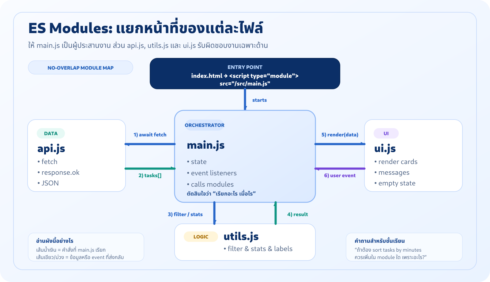
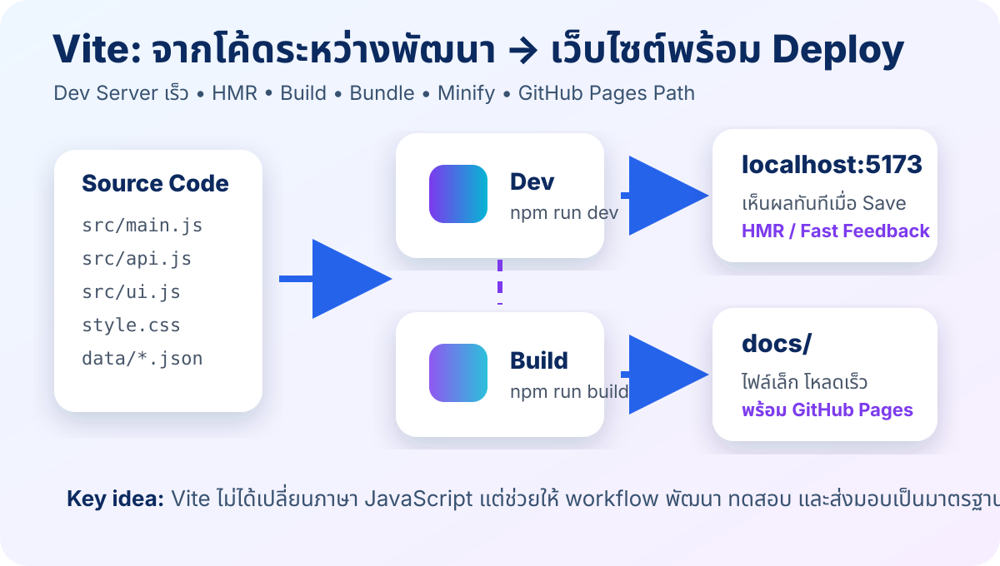
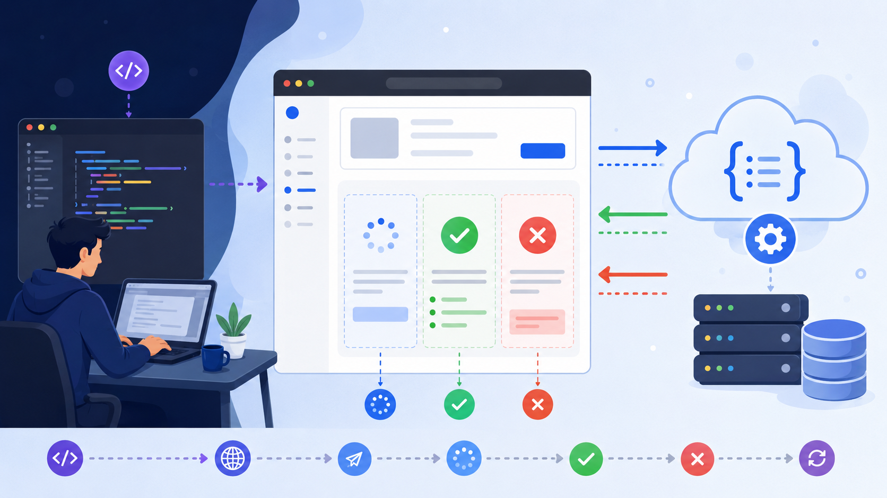
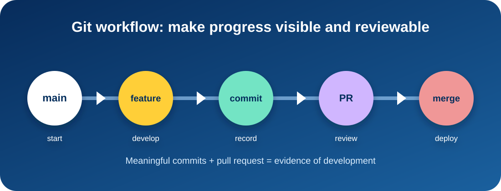

Modern JavaScript → Modules → Async → Deploy
ใช้คู่กับ Interactive Teaching Sandbox โดย อ.ธนิต เกตุแก้ว
เป้าหมาย: สร้าง ENGSE203 Learning Dashboard ที่โหลด JSON, ค้นหา/กรองข้อมูล, build และ deploy ได้จริง
หลังเรียนจบวันนี้ นักศึกษาจะทำอะไรได้?
เขียน JavaScript สมัยใหม่
const/let, destructuring, spread, arrow function, map/filter/reduce
แยกไฟล์ด้วย ES Modules
api.js, utils.js, ui.js, main.js และ import/export
ใช้ Vite workflow
dev server, HMR, build output ไป docs/
รับมือ async/error
fetch, response.ok, try/catch/finally และ UI state
ส่งงานแบบมืออาชีพ
feature branch, commit, PR, GitHub Pages, README
ลำดับการสอน Week 02
เขียนโค้ดให้ชัด
แยกหน้าที่ไฟล์
รันและ build
โหลดข้อมูลไม่บล็อก
loading / success / error
GitHub Pages
ENGSE203 Learning Dashboard
ฟีเจอร์ขั้นต่ำ
- โหลดข้อมูลจาก
learning-tasks.json - ค้นหา/กรองตาม status
- สรุปจำนวน total / todo / doing / done
- มี loading, success, error state
- build เป็น
docs/และ deploy
Learning Dashboard
4Todo
2Doing
1Done
1
สอนเร็วขึ้น แต่ยังได้ลงมือทำจริง
สไลด์นี้
ใช้ตั้งคำถาม อธิบายภาพรวม และชี้จุดที่ต้องจำ
Interactive Sandbox
ใช้ทดลองโค้ด ปรับค่า ดูผลลัพธ์ และเช็กความเข้าใจ
JavaScript สมัยใหม่คือการเขียนให้คนอ่านง่าย
- สื่อเจตนา: ใช้
constเป็นค่าเริ่มต้น,letเมื่อค่าต้องเปลี่ยน - ลดผลข้างเคียง: สร้างข้อมูลใหม่แทนการแก้ของเดิมโดยไม่จำเป็น
- เตรียมสู่ React: array method และ immutability คือพื้นฐานของ Component/State
แต่ต้องให้เพื่อนร่วมทีมเข้าใจด้วย”
const / let / template literal
ควรใช้
const course = "ENGSE203";
let status = "doing";
console.log(`${course}: ${status}`);หลีกเลี่ยง
var course = "ENGSE203";
var status = "doing";
console.log(course + ": " + status);Destructuring + Spread: อ่านข้อมูลเป็นชุด
const task = {
title: "ES Modules",
status: "doing",
minutes: 60
};
const { title, status } = task;
const updated = { ...task, status: "done" };แนวคิด
Destructuring = หยิบค่าที่ต้องใช้
Spread = สร้าง object/array ใหม่จากของเดิม
สำคัญมากเมื่อทำงานกับ state ใน React
map / filter / reduce: คิดเป็น pipeline
const activeTasks = tasks
.filter(({ status }) => status !== "done")
.map((task) => ({ ...task, title: task.title.trim() }));
const totalMinutes = activeTasks.reduce(
(sum, { minutes }) => sum + minutes,
0
);ทดลอง ES6 Pipeline
โจทย์
กรองงานที่ยังไม่ done แล้วรวมเวลาที่ต้องใช้
กด Run ES6 Demo เพื่อดูผลลัพธ์
ทำไมต้องแยกไฟล์?
ไฟล์เดียวใหญ่เกินไป
ค้นหายาก แก้แล้วกระทบหลายจุด ทดสอบลำบาก
แบ่งตามความรับผิดชอบ
api โหลดข้อมูล, utils ประมวลผล, ui แสดงผล, main ควบคุมลำดับ
Architecture ของ LAB 2

main.js เป็นตัวประสานงาน ไม่ควรแบกทุกอย่างไว้ในไฟล์เดียวNamed export / import
src/utils.js
export function getStatusLabel(status) {
const labels = {
todo: "To do",
doing: "In progress",
done: "Done"
};
return labels[status] ?? "Unknown";
}src/main.js
import { getStatusLabel } from "./utils.js";
console.log(
getStatusLabel("doing")
);Entry point ใน HTML
<script type="module" src="/src/main.js"></script>ทำไมสำคัญ?
บอก browser ว่าไฟล์นี้ใช้ import/export และต้องโหลดแบบ module
อย่าเปิดด้วย file:// ให้ใช้ local dev server
จับคู่ไฟล์กับหน้าที่
Vite คืออะไร?
Vite คือเครื่องมือช่วยพัฒนาเว็บสมัยใหม่
- Dev Server: รันเว็บในเครื่องเร็วมาก
- HMR: save แล้วหน้าเว็บเปลี่ยนทันที
- Bundler: รวมและบีบอัดไฟล์เพื่อส่งขึ้นจริง
เปรียบเทียบ
Vite = “ครัวอัจฉริยะ” สำหรับนักพัฒนาเว็บ
เราเขียนโค้ดแยกไฟล์ แล้ว Vite ช่วยจัดการเสิร์ฟและแพ็กส่ง
ทำไม LAB 2 ต้องใช้ Vite?
ไม่เปิด file://
ลดปัญหา module/fetch/CORS
Developer Experience
รองรับ import "./style.css" และ HMR
Production-ready
build เป็น static files สำหรับ GitHub Pages
คำสั่งที่ใช้จริงใน LAB 2
npm create vite@latest . -- --template vanilla
npm install
npm run dev
npm run build
npm run previewDev Server → Build → Docs

vite.config.js สำหรับ GitHub Pages
import { defineConfig } from "vite";
export default defineConfig({
base: "/engse203-lab02-<student-id>/",
build: {
outDir: "docs",
emptyOutDir: true,
},
});ต้องจำ
base ต้องตรงชื่อ repository
outDir: "docs" เพื่อให้ GitHub Pages publish จาก main /docs
Vite Command Simulator
เลือกคำสั่ง
เลือกคำสั่งเพื่อดูว่า Vite ทำอะไร
เว็บที่ดีต้องไม่ค้างระหว่างโหลดข้อมูล

- async = งานที่ต้องรอ เช่น fetch JSON
- await = รอผลลัพธ์โดยไม่ทำให้ UI ค้าง
- try/catch = รับมือกรณีที่โหลดข้อมูลไม่สำเร็จ
fetch ต้องตรวจ response.ok
const response = await fetch(url);
if (!response.ok) {
throw new Error(
`Unable to load tasks (HTTP ${response.status})`
);
}
const tasks = await response.json();จุดที่มักพลาด
fetch() อาจ resolve แม้เจอ 404/500
ดังนั้นต้องตรวจ response.ok เอง
UI State ที่ต้องมี
กำลังโหลดข้อมูล...
แสดง task และ summary
แสดงข้อความที่ผู้ใช้เข้าใจได้
คืนสถานะปุ่ม / เก็บกวาด
try / catch / finally
async function loadDashboard() {
try {
setMessage("loading", "กำลังโหลดข้อมูล...");
const tasks = await fetchLearningTasks();
renderDashboard(tasks);
setMessage("success", `โหลด ${tasks.length} รายการแล้ว`);
} catch (error) {
setMessage("error", `โหลดไม่ได้: ${error.message}`);
} finally {
console.log("Load attempt finished");
}
}Async State Demo
ทดลองโหลดข้อมูล
Mini Learning Dashboard
ทำให้คำสั่งของโครงการเป็นมาตรฐาน
"scripts": {
"dev": "vite",
"build": "vite build",
"preview": "vite preview",
"check": "node scripts/check-project.mjs"
}ประโยชน์
ผู้เรียน ผู้สอน และ CI เรียกคำสั่งเดียวกันได้
ลดการจำคำสั่งยาวและลดความผิดพลาด
ทำงานเป็นขั้นและตรวจสอบย้อนกลับได้

Commit message ที่สื่อความหมาย
ควร
feat: add async task loader
fix: handle empty task list
build: prepare GitHub Pages outputไม่ควร
update
fix
new
testBuild → Docs → Deploy

ตั้งค่า Pages
- Settings → Pages
- Deploy from a branch
- Branch: main
- Folder: /docs
- เปิด Pages URL
Privacy Check ก่อน publish
จำไว้
GitHub Pages คือเว็บสาธารณะตามการตั้งค่าบัญชี/องค์กร
เตรียมพื้นที่ทำงานและ Clone Repo
macOS
mkdir -p ~/Documents/ENGSE203
cd ~/Documents/ENGSE203
code .Windows + WSL2
mkdir -p ~/projects/ENGSE203
cd ~/projects/ENGSE203
code .git clone git@github.com:<username>/engse203-lab02-<student-id>.git
git switch -c feature/lab02-dashboardสร้าง Vite Project และโครงสร้างไฟล์
npm create vite@latest . -- --template vanilla
npm install
npm run devpublic/data/learning-tasks.json
scripts/check-project.mjs
src/api.js
src/utils.js
src/ui.js
src/main.js
src/style.css
vite.config.js
README.mdเขียน Module ตามหน้าที่
fetch + response.ok + JSON
filter + stats + labels
render cards + messages
state + event + orchestration
ทดสอบและเก็บหลักฐาน
npm run check
npm run dev
# normal state: http://localhost:5173/
# error state: http://localhost:5173/?simulateError=1
npm run build
npm run previewCommit → PR → Merge → Deploy
git add .
git commit -m "feat: build async learning dashboard"
git push -u origin feature/lab02-dashboard
# เปิด Pull Request → review → merge
npm run build
git add docs vite.config.js
git commit -m "build: prepare GitHub Pages output"
git push origin mainคะแนน LAB 2: 3 คะแนน
Modern JS + ES Modules
Async/Await + Error Handling
npm Scripts + Build
Git Workflow
GitHub Pages + README
ก่อนส่งงาน ต้องครบทุกข้อ
ปัญหาที่พบบ่อย
เปิด terminal ผิด shell หรือยังไม่ติดตั้ง Node.js
เปิดด้วย file:// หรือ path ไม่ถูก
base path ไม่ตรง repo หรือยังไม่มี docs/ บน main
ลืม type="module" หรือ import path ผิด